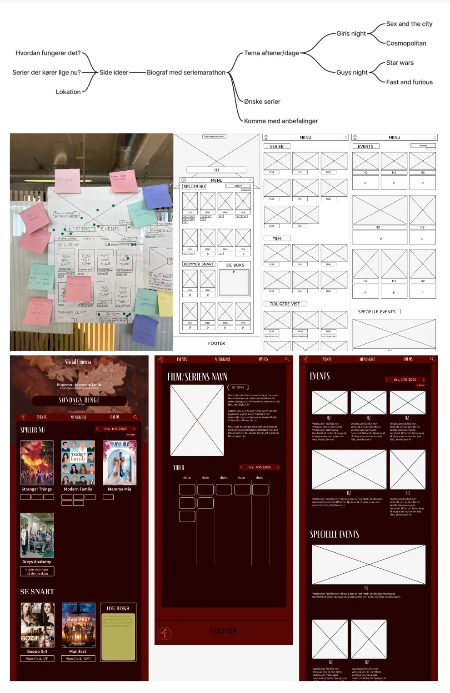

Fra ide til produkt
I tema 3 lærte vi om hele processen - lige fra første ide til færdigt produkt. Vi skulle kode vores egen hjemmeside der omhandlede et emne vi selv valgte - jeg valgte en biograf.
Vi har arbejdet med brainstorm og mindmap. Desk research, interview og observation. Moodboards, styletiles og user stories. Vi har lært at lave vores egne wireframes og klikbarer prototyper, som vi kunne bruge til blandt andet at lave
squint-, 5 sekunders-, likert skala- og tænke højt test. Alle forskellige tests der gav os et indblik i hvad brugeren af vores hjemmeside tænkte og hvilke elementer der fungerede godt og dårligt.

På billedet ovenfor ses en samling af de forskellige elementer vi har lært at bruge i design processen. Tests, styletile, userstories og moodboards.

På billedet ovenfor ses en samling af min process, da vi lavede vores emnesite. Mindmap (øverst) var første step og udfra det lavede vi en paper prototype, som vi testede i klassen. Derefter lavede vi wireframes og til sidst vores klikbarer prototype, hvor vi kunne teste en sidste gang inden vi gik i gang med at kode.

På billedet ovenfor ses forsiden af mit færdigt kodede site.
Design for brugeren
Dette tema gav virkelig et godt indblik i, at det er vigtigt at huske på, at man altid designer til brugeren og at det er deres mening der i sidste ende er med til at afgøre om ens produkt er brugervenligt eller ej. Jeg gik igennem mange forskellige ideer og design muligheder før jeg, med hjælp fra brugertests, endte med det endelige resultat.